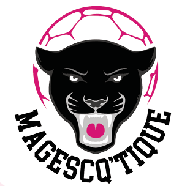
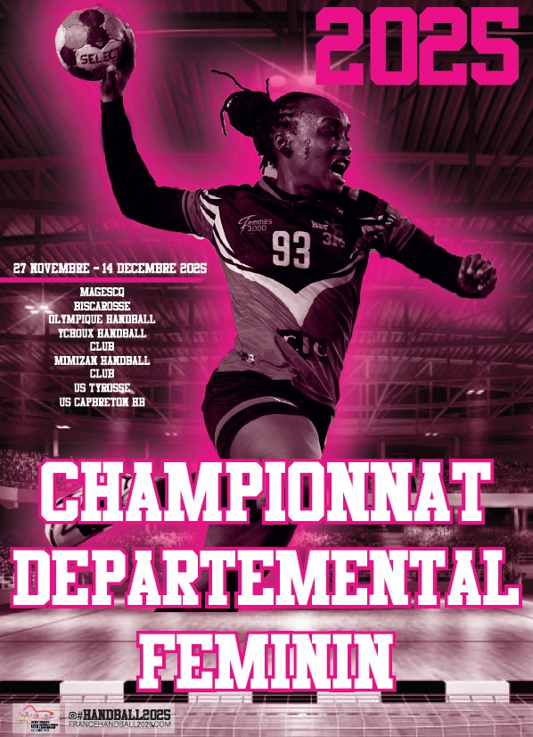
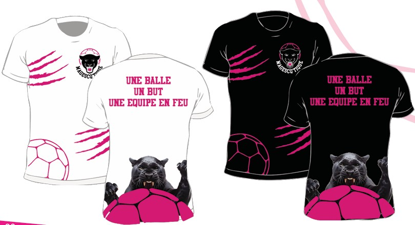

L'essence du projet
Magescq'tique est un projet d'identité visuelle globale. L'enjeu était de créer une image de marque forte, moderne et mémorable, capable de s'adapter à une multitude de supports tout en conservant une cohérence graphique irréprochable.
La démarche artistique
Le concept repose sur un équilibre entre minimalisme et impact visuel. J'ai travaillé sur une typographie sur-mesure et un symbole iconique qui évoque à la fois le dynamisme et la précision. La palette de couleurs a été choisie pour affirmer un positionnement premium et contemporain.
Le Logo & Les Déclinaisons

Logo PrincipalRecherche sur l'épurement des formes et la lisibilité du symbole.
Applications de marque

affiche
goodiesSupports Finalisés
Le projet a abouti à la création d'une Charte Graphique complète, incluant les règles d'usage du logo, la typographie, la palette chromatique et les modèles de supports de communication.